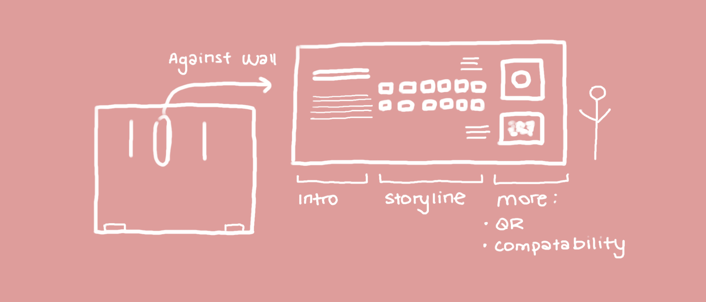
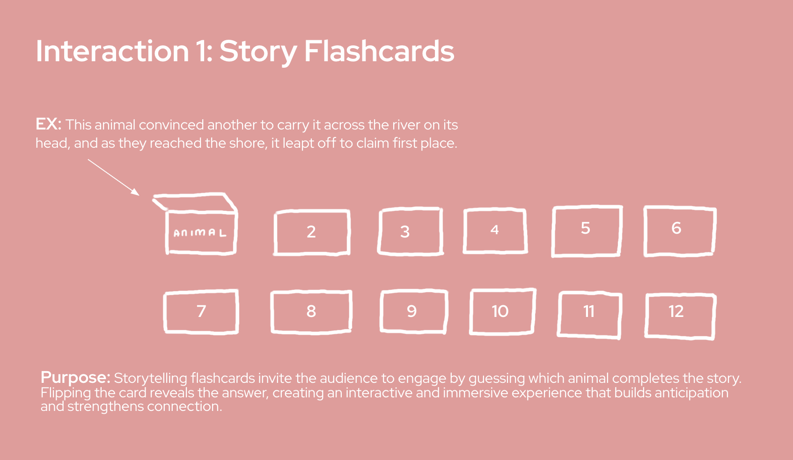
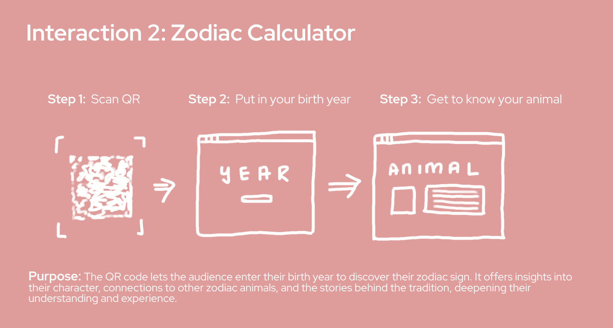
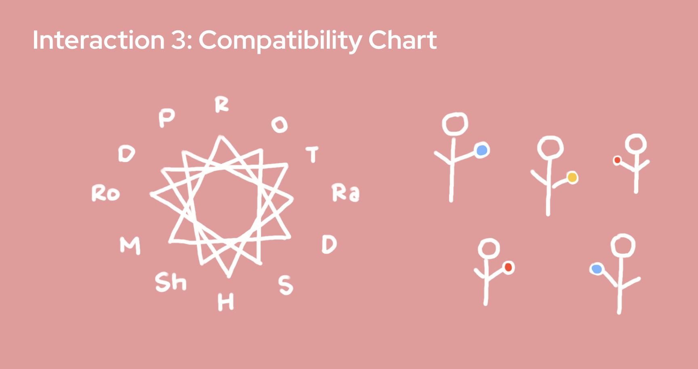
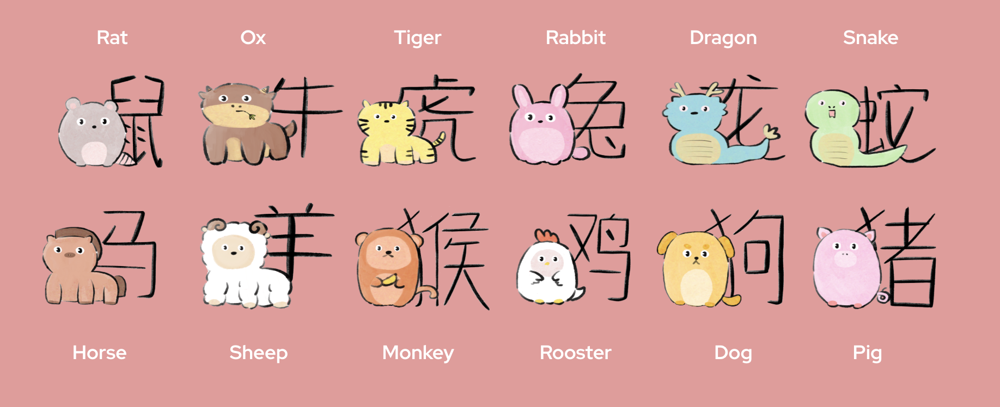
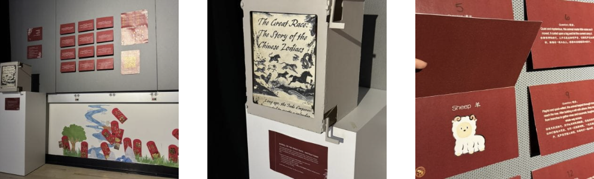
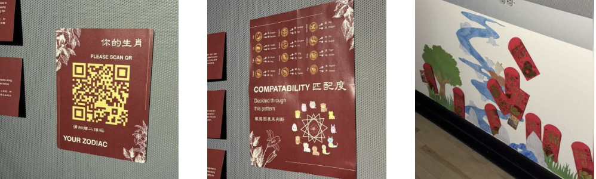

May 2, 2025
For the final exhibition for Cabinets of Wonder, my team and I wanted to share part of Chinese culture that we learned from our study abroad experience at NYU Shanghai. In our time there, we learned of the most popular and widely celebrated festival there, called Lunar New Year, where people would come together to usher in the new year by making dumplings, buying new clothes, and spending time with loved ones. This is part of the culture that warmed up our hearts, hence, the topic we chose was about the Twelve Zodiac Race.
The race was formed by the Jade Emperor, who declared that the first twelve animals to cross the finish line would have a year named after them. Since then, every year is named after an animal, and the cycle is repeated every 12 years. The animals in order are: Rat, Ox, Tiger, Tiger, Rabbit, Dragon, Snake, Horse, Goat, Monkey, Rooster, Dog, and Pig. Each animal won the race in a unique way that translated into their personality and correlated with each other. For example, the rat is known to be clever as the Rat rode on top of the Ox for the race and jumped in first to secure the top spot, and also forgot to wake up the cat for the race, making them lifelong enemies. As a result, people born in the year of the Rat are known to be quick-witted and resourceful. We wanted to share this fun storyline and these fun facts with the audience.
Our exhibition has four parts: the scroll to let the reader gain a solid background on the story, flashcards to test their knowledge, a zodiac calculator for you to discover your own, and a compatibility chart to see your relationship with others. In addition, we also had a secret treasure hunt where the audience could open the red envelopes to get a takeaway zodiac card.
From top left to bottom right: overall exhibit, scroll, flashcards, zodiac calculator, compatibility chart, red envelopes
    Conceptual Package → Here we compiled our inspiration and goals for this exhibition, where we wanted to design an exhibition for everyone of any age, even for those with little knowledge of Chinese culture, to learn more about Chinese culture and themselves when they leave. We also listed prototyping questions to make sure everything was clear to the audience and if the flow was smooth between each interaction.
For obstacles, it would be the fabrication with the sizing of the scroll and frames. We had to resize designs multiple times, such as making the scroll stick thicker to withhold the amount of paper for the scroll. In addition, I designed the flashcards, zodiac calculator, and compatibility chart. In this process, it was important to conduct research in order to make sure that the information relayed in the exhibit was correct. While designing the website, I also had to focus on how it would be perceived on a mobile device, which was different from the computer view I designed for. We also worked around with making each piece of the interactions large enough, such as the compatibility chart and landscape. Overall, we learned to be more flexible to test out everything.
Zodiac Calculator →  The exhibit was overall successful as people think the interactions and designs matched with welcoming everyone of all ages to come and explore. In addition, each interaction provided different layers of the concept, and with each interaction, the audience was able to train their retention of the story.
Return to Classes →